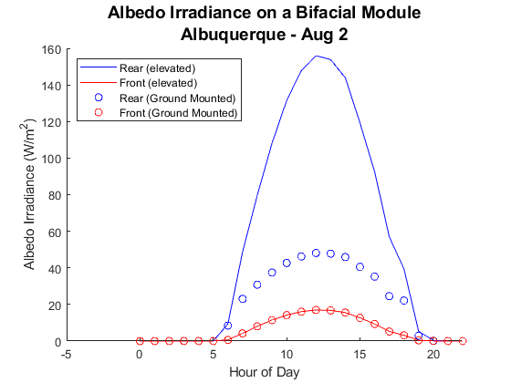

Contents
example_pvl_Purdue_albedo_model
Example calculation of ground reflected diffuse irradiance on the rear surface of a PV module.
clc
clearvars
close all
Load weather data
TMYData = pvl_readtmy3('723650TY.csv'); TimeMatlab = TMYData.DateNumber; dv = datevec(TimeMatlab); tfilter = and(dv(:,2) == 8, dv(:,3) == 2); % Select August 2 Time = pvl_maketimestruct(TimeMatlab(tfilter), ones(size(TimeMatlab(tfilter)))*TMYData.SiteTimeZone);
Sun position calculations
HExtra = pvl_extraradiation(pvl_date2doy(Time.year,Time.month,Time.day));
Location = pvl_makelocationstruct(TMYData.SiteLatitude,TMYData.SiteLongitude,TMYData.SiteElevation);
PresPa = TMYData.Pressure(tfilter)*100; %Convert pressure from mbar to Pa
[SunAz, SunEl, AppSunEl, SolarTime] = pvl_ephemeris(Time,Location,PresPa,TMYData.DryBulb(tfilter));
SunZen = 90 - AppSunEl;
AM = pvl_relativeairmass(SunZen);
AM(isnan(AM)) = 20;
Describe system
SurfTilt_Front = 30; SurfTilt_Rear = 180 - SurfTilt_Front; SurfAz_Front = 180; SurfAz_Rear = 180 + SurfAz_Front; Albedo = 0.25; % 25% albedo coefficient for concrete/vegetation EtoH = [1 0]; % Elevated (EtoH = 1) and ground-mounted (EtoH = 0)
Run calculation
for i = 1:length(EtoH) I_Alb_Front(:,i) = pvl_Purdue_albedo_model(SurfTilt_Front, SurfAz_Front, EtoH(i), Albedo, ... TMYData.DHI(tfilter), TMYData.DNI(tfilter), HExtra, SunZen, SunAz, AM); I_Alb_Rear(:,i) = pvl_Purdue_albedo_model(SurfTilt_Rear, SurfAz_Rear, EtoH(i), Albedo, ... TMYData.DHI(tfilter), TMYData.DNI(tfilter), HExtra, SunZen, SunAz, AM); end
Plot the results
figure hold all s = {'r-','b-','ro','bo'}; for i=1:length(EtoH); plot(Time.hour, I_Alb_Rear(:,i), s{2*i}) plot(Time.hour, I_Alb_Front(:,i), s{2*i-1}) end xlim([-5 22]) xlabel('Hour of Day') ylabel('Albedo Irradiance (W/m^2)') legend('Rear (elevated)', 'Front (elevated)', 'Rear (Ground Mounted)', 'Front (Ground Mounted)', ... 'Location', 'NorthWest') title({'Albedo Irradiance on a Bifacial Module';'Albuquerque - Aug 2'},'FontSize',14)
Copyright 2018 Sandia National Laboratories